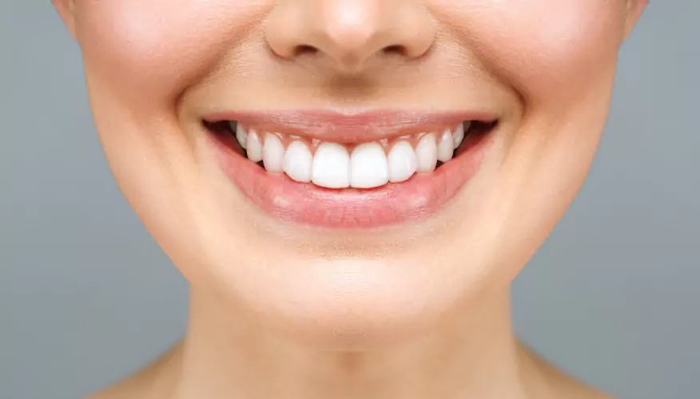
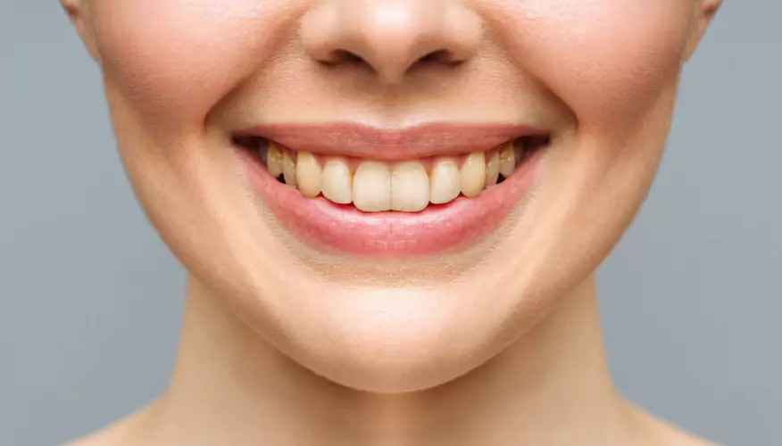
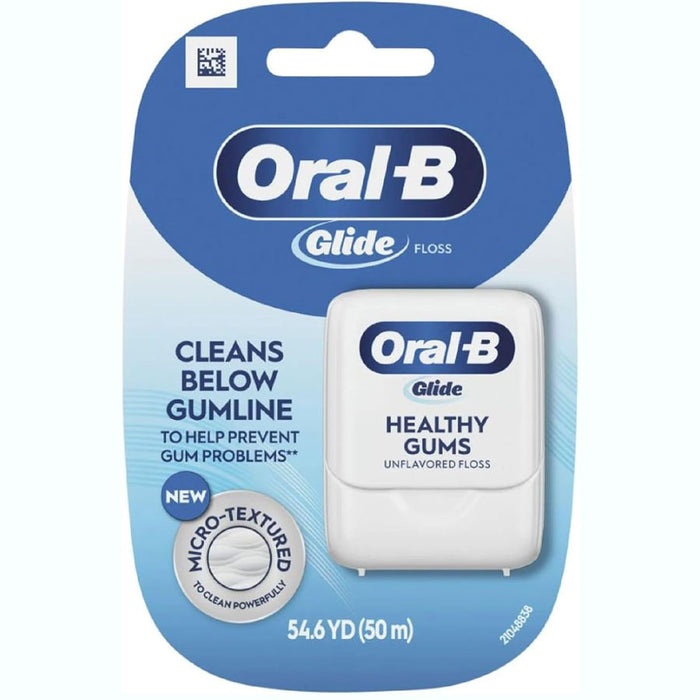

Limpieza esencial
Evaluación y orientación preventiva
S/ 89Precio de ejemplo
- Evaluación odontológica
- Orientación de higiene
- Plan de cuidado personalizado
Planes de evaluación con precios ilustrativos.
Evaluación y orientación preventiva

Una primera visita para Nident Kids

Conoce tus opciones de ortodoncia
Promociones de demostración: no son ofertas vigentes. Los tratamientos, radiografías y procedimientos adicionales no están incluidos. El presupuesto real se define tras la evaluación.
Una imagen, una especialidad.
Explora lo que te gustaría entender de tu sonrisa.
01 / 07 · Ortodoncia
Atención cercana y planes pensados para ti. Queremos que te sientas acompañado desde la primera conversación hasta el último control.
Con sensibilidad, respeto y cuidado en cada etapa de la vida.
En Nident Kids hablamos su idioma. Acompañamos a niños, niñas y familias con paciencia y explicaciones sencillas.
Mueve el deslizador y descubre el antes y después.

Después
AntesImágenes de referencia. Cada sonrisa requiere una evaluación personalizada.
La confianza empieza cuando te escuchamos. Y crece con cada detalle de tu cuidado.
Cada plan se diseña según tus metas y tu tiempo. Resolvemos tus dudas y te acompañamos en cada paso.
Conoce las opciones de diagnóstico y tratamiento disponibles durante tu evaluación.
Consulta la disponibilidad y encuentra un momento para cuidar de ti.
Consulta los horarios ↗


Conoce a quienes cuidarán tu sonrisa. La experiencia empieza con una conversación cercana, una evaluación y un plan pensado para ti.
Tu nueva rutina empieza con pequeños detalles.
Explora la tienda Cepillos
Cepillos Cremas dentales
Cremas dentales
Accesorios Infantil
InfantilCatálogo y precios de demostración. Fotografías de los productos indicados.
Un pequeño espacio para entender tu salud dental y crear hábitos en familia.
La ADA recomienda cepillarse dos veces al día con pasta con flúor y un cepillo de cerdas suaves.
Leer nuestra guía de cuidadosAcompaña el cepillado de niños y niñas. Tu odontopediatra puede orientarte sobre los productos adecuados para su edad.
Pregunta en tu próxima visitaEste video se conecta a YouTube. Puedes habilitarlo desde tus preferencias.
Conoce cómo trabajamos, qué revisamos y cómo puedes cuidar tu salud dental en casa.
Reseñas y valoraciones de ejemplo para visualizar la plantilla; no son testimonios reales.
“Me gustaría conocer cada etapa de mi tratamiento y sentirme acompañada durante los controles.”
Historia y personaje de ejemplo
“Busco una primera visita tranquila para mi hija y espacio para preguntar sobre sus hábitos.”
Historia y personaje de ejemplo
“Quiero comprender mis alternativas de cuidado y elegir con información clara.”
Historia y personaje de ejemplo
“Valoro aprender a cuidar mi sonrisa en casa y entender qué incluye mi visita.”
Historia y personaje de ejemplo

“Me gustaría organizar las revisiones de mi familia con horarios claros para cada persona.”
Historia y personaje de ejemplo
“Busco un equipo que me escuche y me explique el plan antes de comenzar.”
Historia y personaje de ejemplo
Reseña 1 de 6
Un espacio para hábitos, novedades y pequeños momentos de cuidado.
En familia Tu sonrisaEn casa
Tu sonrisaEn casa El consultorio
El consultorioContenido editorial de la maqueta. Las cuentas reales de Nident aún no están vinculadas.
Tu motivo de consulta guía el encuentro. Queremos saber qué notas, qué esperas y qué dudas te gustaría resolver.
La evaluación se acompaña de una explicación. Pregunta qué significa cada hallazgo y qué información hace falta.
Conversa sobre alternativas, prioridades y presupuesto antes de organizar las siguientes visitas.

Dale a tu sonrisa el cuidado que merece.